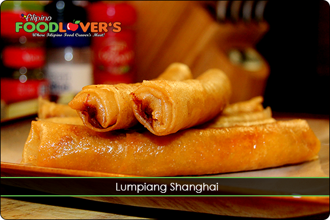
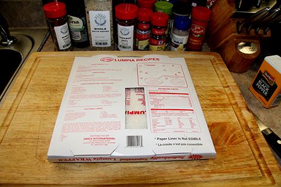
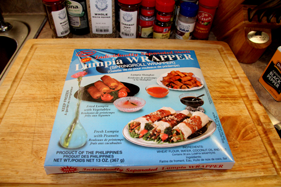
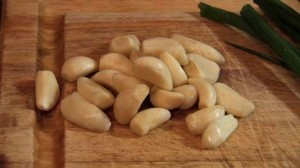
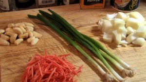
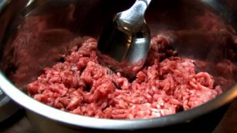
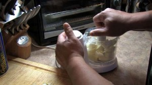
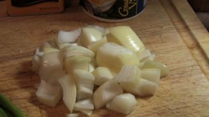
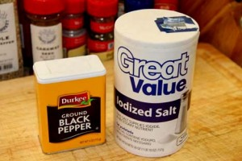

Lumpia Shanghai
In the Philippines we have different types of Lumpia known as Eggrolls, but this one stood out the most. It is considered to be the premium Lumpia. We call this one Lumpiang Shanghai. The one thing that separates this Lumpia among others is the filling.

This Lumpia is mostly meat and it is a lot skinnier than the traditional one. This one is also very popular at most celebrations. Since we all tend to serve the best on the table during special occasions, it definitely makes the cut in that category. Even though this appetizer is easy to make, it is very time consuming wrapping it. So, be patient when it comes to that part and you will be rewarded with one of the best tasting Lumpia you’ve ever had.
Mix and let it cured for at least one day (three days max) the following ingredients before cooking them.
Ingredients:
- ½ Lb. Ground beef
- ½ Lb. Ground pork
- 1 Large head of garlic, peeled & *smashed finely
- ½ Cup *finely chopped green onion
- 1 Medium sized Onion, *finely diced
- 1 Large Carrot peeled and *diced finely
- 1 Teaspoon Ground black pepper
- 1 Teaspoon Salt
- Cooking oil for deep frying (Corn oil preferably)
*Use an electric slicer. It will make this process so much quicker!
Note:
- Make sure that you put the proper amount of garlic. Otherwise, your Lumpia will taste like the one you buy in the store, bland and not as tasty!
- Like it says above, mix all ingredients thoroughly, cover, and let cure in the fridge for one to three days.
- Go ahead and wrap the Lumpia, then place it in a sealed container, and let it cured before freezing or cooking it. Do not skip the curing process.
- Curing the meat gives it enough time to fully blend all the ingredients.
Wrapping the Lumpia:
Follow the instructions on the back of the Lumpia wrapper. Below is a picture of the brand of wrapper I used.
TIP:
Do a taste test before wrapping a large batch of Lumpia by cooking one piece and taste it to see if it’s salty enough or/ if it needs more salt. Another thing, your Lumpia will be a little bit more salty after it cures for a while, so please keep that in mind also. This is important step as every ones taste vary from person to person!


Cooking Instructions:
- Deep fry lumpia on low heat to avoid burning the wrapper before the feeling gets cooked.
- Make sure the meat inside the lumpia is thoroughly cooked before serving. I usually just cut into one check that the meat is done inside.
- Make sure you do this on your first batch to give you a good idea of how long you should cook it. Congratulations, you're done. Enjoy your Lumpia!






